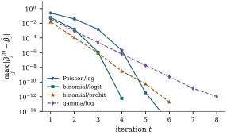

34.4 Iteratively reweighted least squares
The likelihood equations Eq. 34.3.1 have no closed-form solution. Any general-purpose optimizer will solve them, but there is a better way, and it is why generalized linear models became practical: the natural Newton-type iteration is a weighted least squares fit, repeated. The apparatus of Chapter 6 and Section 21.3 is therefore reusable, including the stable routines of Chapter 10.
34.4.1. Fisher scoring is weighted least squares
Newton’s method for maximizing
Let
Then the Fisher scoring step
that is, the regression of the working response
Proof. By Eq. 34.3.2
and Eq. 34.3.1,
with everything evaluated at
Idea. The working response is a
first-order Taylor expansion of the link applied to the
data:
Written out, the algorithm is short.
Algorithm. Iteratively reweighted least squares.
- Choose starting fitted means
- For
- Stop when
Because the map is a fixed-point iteration whose
fixed points solve Eq. 34.3.1,
any limit is a solution of the likelihood equations;
under the canonical link with
Starting values. The usual device is
to start from the data themselves: set
Relation to the least squares
chapters. Each step of Eq. 34.4.2
is the weighted least squares problem of Theorem 21.3.1
with known weights, so its convergence theory
is numerical, not statistical: the final
Warning. The name “iteratively
reweighted least squares” is also used for the robust
M-estimation algorithm of Proposition 20.6.1,
and the two are different. There the weights come from a
34.4.2. The algorithm in practice
The listing below implements Eq. 34.4.2
in a dozen lines. A family is nothing but
import numpy as np
from scipy import stats
# A family is the variance function V, the link g, its inverse h, the derivative
# h' = d(mu)/d(eta), and a rule for the starting fitted means.
def poisson_log():
return dict(name="Poisson/log", V=lambda mu: mu, g=np.log, h=np.exp,
dmu=lambda eta: np.exp(eta), start=lambda y, w: y + 0.1)
def binomial_logit():
return dict(name="binomial/logit", V=lambda mu: mu * (1 - mu),
g=lambda mu: np.log(mu / (1 - mu)), h=lambda eta: 1 / (1 + np.exp(-eta)),
dmu=lambda eta: 1 / (2 + np.exp(eta) + np.exp(-eta)),
start=lambda y, w: (w * y + 0.5) / (w + 1.0))
def binomial_probit():
return dict(name="binomial/probit", V=lambda mu: mu * (1 - mu),
g=stats.norm.ppf, h=stats.norm.cdf, dmu=stats.norm.pdf,
start=lambda y, w: (w * y + 0.5) / (w + 1.0))
def gamma_log():
return dict(name="gamma/log", V=lambda mu: mu ** 2, g=np.log, h=np.exp,
dmu=lambda eta: np.exp(eta), start=lambda y, w: y)
def irls(X, y, family, w=None, tol=1e-12, max_iter=60, trace=False):
"""Fisher scoring for a generalized linear model, as weighted least squares.
At each step the working response is z = eta + (y - mu)/h'(eta) and the working
weight is W = w h'(eta)^2 / V(mu); beta is the weighted least squares coefficient
of z on X. The dispersion phi never enters, because it cancels.
"""
w = np.ones(len(y)) if w is None else np.asarray(w, float)
mu = family["start"](y, w)
eta = family["g"](mu)
beta, path = np.zeros(X.shape[1]), []
for _ in range(max_iter):
d = family["dmu"](eta) # h'(eta)
W = w * d ** 2 / family["V"](mu) # working weights
z = eta + (y - mu) / d # working response
XtW = X.T * W
beta_new = np.linalg.solve(XtW @ X, XtW @ z) # one weighted least squares fit
path.append(beta_new)
eta = X @ beta_new
mu = family["h"](eta)
if np.max(np.abs(beta_new - beta)) < tol * (1 + np.max(np.abs(beta_new))):
beta = beta_new
break
beta = beta_new
W = w * family["dmu"](eta) ** 2 / family["V"](mu) # weights at the solution
cov_unscaled = np.linalg.inv((X.T * W) @ X) # (X^T W X)^{-1}
return (beta, cov_unscaled, np.array(path)) if trace else (beta, cov_unscaled)import statsmodels.api as sm
rng = np.random.default_rng(3401)
n = 300
Xs = np.column_stack([np.ones(n), rng.normal(size=n), rng.binomial(1, 0.4, n)])
beta_true = np.array([0.7, 0.5, -0.4])
counts = rng.poisson(np.exp(Xs @ beta_true))
beta_hat, cov = irls(Xs, counts.astype(float), poisson_log())
sm_fit = sm.GLM(counts, Xs, family=sm.families.Poisson()).fit()
print("from scratch:", np.round(beta_hat, 6))
print("statsmodels :", np.round(sm_fit.params, 6))
print("standard errors:", np.round(np.sqrt(np.diag(cov)), 6), np.round(sm_fit.bse, 6))The script behind this section runs the same solver
on four models — Poisson/log, binomial/logit,
binomial/probit and gamma/log — and checks the
coefficients and standard errors against
statsmodels to at least eight decimal
places in every case. Two details matter. For the
binomial fits the response passed to the solver is the
proportion
34.4.3. Convergence and its failures
Figure
34.4.1 records
This is what the theory predicts. Under the canonical
link Fisher scoring is Newton’s method (Theorem 34.3.1(d)),
quadratically convergent near a nondegenerate maximum.
Under any other link the two information matrices differ
by

Four things go wrong often enough to be worth recognizing.
The estimate does not exist. When the maximum of Example (Two ways the maximum fails to exist) is not attained the iteration cannot converge, and its behaviour is characteristic: the coefficients grow without limit, the deviance falls towards its infimum, the working weights collapse to zero. Software that stops on a small change in the deviance then reports a large but finite estimate with a large standard error and no warning.
Ten binary responses were generated with
| step | deviance | largest working weight | |
|---|---|---|---|
| 1 | |||
| 4 | |||
| 7 | |||
| 8 | — | — | — |
At the eighth step every fitted probability has
reached
x_sep = np.array([-2.4, -1.7, -1.1, -0.6, -0.2, 0.3, 0.8, 1.4, 1.9, 2.6])
y_sep = (x_sep > 0).astype(float) # the two groups do not overlap
X_sep = np.column_stack([np.ones(10), x_sep])
for iters in range(1, 9):
with np.errstate(divide="ignore", invalid="ignore"):
b, _ = irls(X_sep, y_sep, binomial_logit(), tol=0.0, max_iter=iters)
mu = 1 / (1 + np.exp(-(X_sep @ b)))
dev = -2 * np.sum(np.where(y_sep == 1, np.log(mu), np.log(1 - mu)))
print(f"{iters} steps: slope {b[1]:9.4f} deviance {dev:.3e}"
f" largest working weight {np.max(mu * (1 - mu)):.3e}")The step leaves the admissible set.
With a link whose range is not all of
The information matrix is nearly
singular. The matrix inverted at each step is
The iteration converges to the wrong stationary point. For non-canonical links the log-likelihood need not be concave, and Fisher scoring from a bad start can settle at a local maximum; the defence is several starting values compared by maximized log-likelihood.
34.4.4. Exercises
A. Check your understanding
Verify the approximation
B. Practice
Take grouped binomial data with all
Solution. With
Modify Eq. 34.4.2
for a model with an offset
C. Going deeper
Show that under the canonical link, Fisher scoring is
Newton’s method applied to a strictly concave function,
and deduce that when the maximum exists, the iteration
converges to it from any starting point at which the
step is well defined provided the step is
damped: for each
Solution. By Theorem 34.3.3
the Hessian